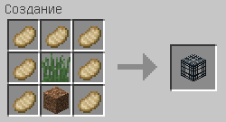
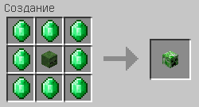

Adeil and ArtSin Crafts Mod
Содержание
Крафты
Факел
Ингредиенты: 1 уголь, 1 красный факел
Бесформенный крафт
Ингредиенты: 1 уголь, 1 светопыль
Бесформенный крафт
Ингредиенты: 1 красный факел, 8 шт. красной пыли
Книга с пером
Ингредиенты: 1 написанная книга, 1 колба с водой
Бесформенный крафт

Седло
Ингредиенты: 7 шт. кожи, 2 нити
Спаунер свиней
Ингредиенты: 7 шт. жареной свинины, 1 блок травы
Ингредиенты: 7 шт. жареной свинины, 1 блок высокой травы, 1 блок земли
Трава
Ингредиенты: 1 блок высокой травы, 1 блок земли
Череп скелета
Ингредиенты: 4 кости
Голова игрока
Ингредиенты: 5 шт. кожи, 1 череп скелета
Ингредиенты: 1 кожаный шлем, 1 череп скелета
Череп скелета-иссушителя
Ингредиенты: 8 шт. угля, 1 череп скелета
Голова зомби
Ингредиенты: 8 изумрудов, 1 голова игрока
Голова крипера
Ингредиенты: 8 изумрудов, 1 голова зомби
Паутина
Ингредиенты: 9 нитей
Губки
Ингредиенты: 4 блока шерсти